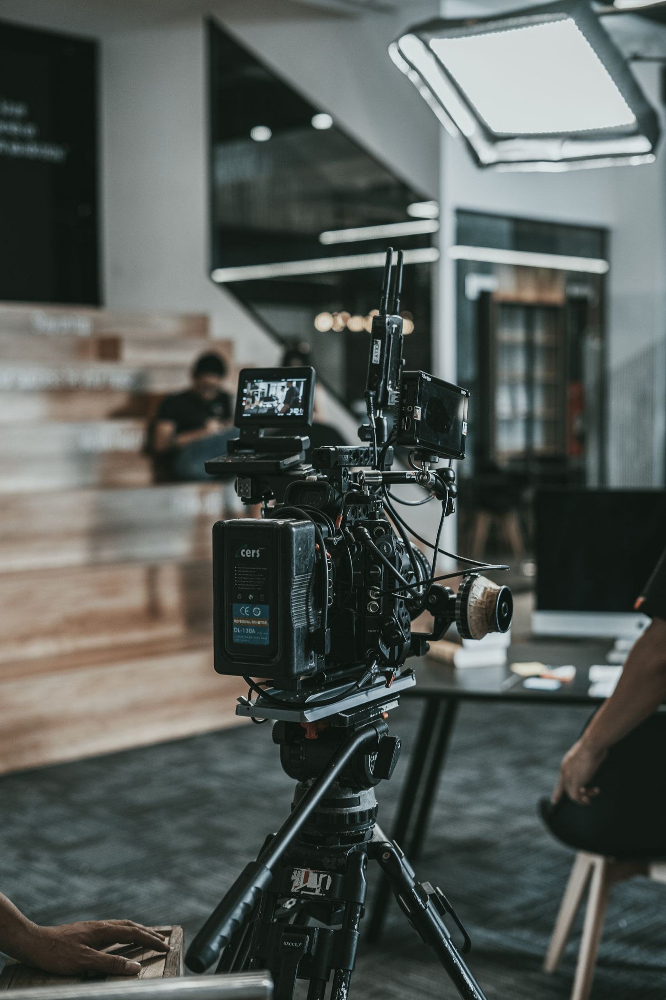

Ürün çekiminden önce: hazırlık listesi
Çekim gününde zaman kazandıran ürün, mekân ve teslim hazırlıkları.

Görsellerin kullanılacağı yerleri belirleyin
E-ticaret ürün sayfası, sosyal medya ve basılı katalog aynı kadrajı istemeyebilir. Kullanım alanlarını, gerekli yatay veya dikey versiyonları ve yazı için bırakılacak boşlukları çekim öncesinde paylaşın.
Ürünleri çekime hazırlayın
Ambalajları, etiketleri ve yüzeyleri kontrol edin. Yedek ürün, temizlik bezi ve gerekli aksesuarları hazır bulundurun. Küçük bir çizik, yakın planda beklenenden daha belirgin görünebilir.
Bir çekim listesi oluşturun
Her ürün için ana görsel, detay ve kullanım sahnesini listeleyin. Renk veya boyut varyasyonlarını ayrıca belirtin. Referans görselleri neyi sevdiğinizi anlatarak paylaşın: ışık, arka plan veya kadraj.
Onay ve teslimi netleştirin
Çekim sırasında kimin karar vereceğini belirleyin. Teslim edilecek fotoğraf sayısı, dosya biçimi, rötuş kapsamı ve takvim üzerinde önceden anlaşın. Böylece çekim gününde herkes aynı listeye bakar.
Ürün listesi, kullanım alanları, referanslar ve teslim beklentilerini tek bir dosyada toplayın.